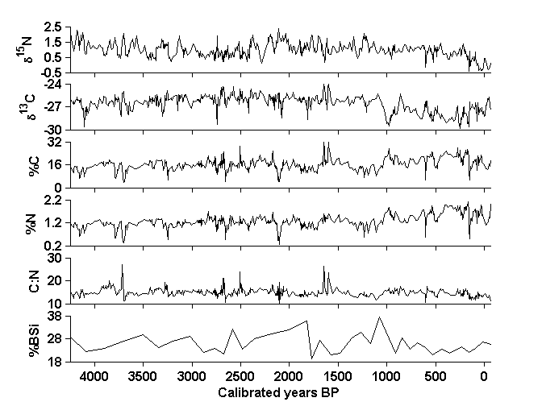

Contents
Fig_S3_script.m
Make Figure S3 from: Dunnette P.V., P.E. Higuera, K.K. McLauchlan, K.M. Derr, C.E. Briles, M.H. Keefe. 2014. Biogeochemical impacts of wildfires over four millennia in a Rocky Mountain subalpine watershed. New Phytologist Accepted.
Fig. S3. Biogeochemical time series for Chickaree Lake. Median sample resolution was ~130 years for %BSi and ~5 years for all other variables.
FILE REQUIREMENTS: (1) CH10_biogeochemData.csv -- biogeochemical data from Chickaree Lk. (2) CH10_BSiData.csv -- biogenic silica (BSi) and biogeochemical data from Chickaree Lake.
DEPENDENCIES: NONE
CITATION, FILES, AND SELF-AUTHORED FUNCTIONS AVAILABLE FROM FigShare Higuera, P.E. and P.V. Dunnette. 2014. Data, code, and figures from Dunnette et al. 2014. figshare. http://dx.doi.org/10.6084/m9.figshare.988687
Created by: P.V. Dunnette Created on: January 2013 Edited: 4/2014 for publication, by P.V. Dunnette
University of Idaho, PaleoEcology and Fire Ecology Lab http://www.uidaho.edu/cnr/paleoecologylab phiguera@uidaho.edu
clear all
Set working directories: directories where input data are located
%%%% IF ALL FILES ARE LOCATED IN THE SAME DIRECTORY AS THIS SCRIPT, CHANGE %%%% workdingDir to 'pwd' startDir = pwd; % Record starting path workingDir = 'L:\4_archivedData\Dunnette_et_al_2014\CH10_biogeochem\';
Load data
cd(workingDir) % Change to working directory data1 = csvread('CH10_biogeochemData.csv',1,3); data2 = csvread('CH10_BSiData.csv',1,0); cd(startDir)
Define variables from biogeochemData
ageTop1 = data1(:,4); % cal yr BP N15 = data1(:,6); % N isotopic composition (d15N; o/oo) N = data1(:,7); % Percent (%) N C13 = data1(:,8); % Carbon isotopic composition (d13C; o/oo) C = data1(:,9); % Percent (%) C CN = data1(:,10); % C:N ratio
Define variables from BSiData
ageTop2 = data2(:,3); % cal yr BP BSi = data2(:,5); % Percent (%) BSi
Create figure
figure('Color',[1 1 1]); H = 1.1; %%%% Plot of d15N time series h = subplot(6,1,1); plot(ageTop1,N15,'k','LineWidth',1); ylabel('\delta^1^5N','FontSize',10,'FontWeight','b'); set(gca,'box', 'off','XDir','reverse','FontSize',10,'FontWeight','b',... 'xticklabel',[],'tickdir','out','xlim',[-60 4250],'ylim',[-0.5 2.5],... 'yTick',[-0.5:1:2.5]); p = get(h,'pos'); p(4) = p(4)*H; set(h,'pos',p); %%%% Plot of d13C time series h = subplot(6,1,2); plot(ageTop1,C13,'k','LineWidth',1); ylabel('\delta^1^3C','FontSize',10,'FontWeight','b'); set(gca,'box', 'off','XDir','reverse','FontSize',10,'FontWeight','b',... 'xticklabel',[],'tickdir','out','xlim',[-60 4250],'ylim',[-30 -24],... 'yTick',[-30:3:-24]); p = get(h,'pos'); p(4) = p(4)*H; set(h,'pos',p); %%%% Plot of C(%) time series h = subplot(6,1,3); plot(ageTop1,C,'k','LineWidth',1); ylabel('%C','FontSize',10,'FontWeight','b'); set(gca,'box', 'off','XDir','reverse','FontSize',10,'FontWeight','b',... 'xticklabel',[],'tickdir','out','xlim',[-60 4250],'ylim',[0 32],... 'yTick',[0:16:32]); p = get(h,'pos'); p(4) = p(4)*H; set(h,'pos',p); %%%% Plot of N(%) time series h = subplot(6,1,4); plot(ageTop1,N,'k','LineWidth',1); ylabel('%N','FontSize',10,'FontWeight','b'); set(gca,'box', 'off','XDir','reverse','FontSize',10,'FontWeight','b',... 'xticklabel',[],'tickdir','out','xlim',[-60 4250],'ylim',[0.2 2.2],... 'yTick',[0.2:1:2.2]); p = get(h,'pos'); p(4) = p(4)*H; set(h,'pos',p); %%%% Plot of C:N time series h = subplot(6,1,5); plot(ageTop1,CN,'k','LineWidth',1); ylabel('C:N','FontSize',10,'FontWeight','b'); set(gca,'box', 'off','XDir','reverse','FontSize',10,'FontWeight','b',... 'xticklabel',[],'tickdir','out','xlim',[-60 4250],'ylim',[10 30],... 'yTick',[10:10:30]); p = get(h,'pos'); p(4) = p(4)*H; set(h,'pos',p); %%%% Plot of BSi(%) time series h = subplot(6,1,6); plot(ageTop2,BSi,'k','LineWidth',1); ylabel('%BSi','FontSize',10,'FontWeight','b'); set(gca,'box', 'off','XDir','reverse','FontSize',10,'FontWeight','b',... 'tickdir','out','xlim',[-60 4250],'ylim',[18 38],... 'yTick',[18:10:38],'xtick',[0:500:4000]); xlabel('Calibrated years BP','FontSize',10,'FontWeight','b'); p = get(h,'pos'); p(4) = p(4)*H; set(h,'pos',p);